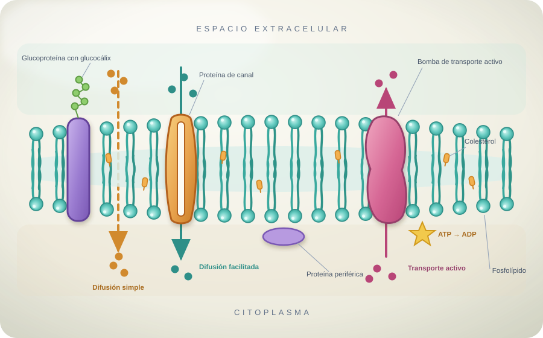

Modelo tridimensional
El mosaico fluido en acción
La bicapa de fosfolípidos contiene proteínas que funcionan como canales, transportadores o receptores.
La membrana es selectivamente permeable: no todo atraviesa libremente. Las moléculas pequeñas y apolares pueden difundirse; el agua se mueve por ósmosis; los iones necesitan proteínas.
El transporte activo usa energía de ATP para mover sustancias contra su gradiente. La endocitosis y la exocitosis mueven materiales grandes mediante vesículas.
Difusión simpleGases como O₂ y CO₂ atraviesan la bicapa desde mayor a menor concentración.
ÓsmosisEl agua cruza hacia el lado con mayor concentración de solutos, a través de la bicapa o acuaporinas.
Difusión facilitadaProteínas de canal o transportadoras permiten el paso sin gasto directo de ATP.
BombaUna proteína usa ATP para mover iones contra el gradiente, como la bomba sodio-potasio.
CotransporteEl gradiente de una sustancia impulsa el movimiento de otra en la misma proteína.
EndocitosisLa membrana se invagina y forma una vesícula para incorporar partículas o líquidos.
ExocitosisUna vesícula se fusiona con la membrana y libera su contenido al exterior.

Flechas: movimiento de partículas · arrastrá para explorar
Vista didáctica, no a escala

Pregunta para pensar
¿Por qué una célula no puede dejar entrar todo?
Porque necesita conservar diferencias de concentración y condiciones internas. La homeostasis depende de que la membrana seleccione qué entra, qué sale y cuándo hace falta gastar energía.